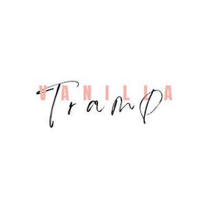

Trade Mark Journal No.2025/025 20 June 2025
UK00004215632 8 June 2025 (3,35)

- Class 3
- Hair cosmetics; Products for protecting coloured hair; Hair shampoos; Hair styling lotions; Hair lotions; Hair shampoo; Hair moisturizers; Hair serums; Hair balms; Cosmetic hair lotions; Hair oils; Hair moisturisers; Hair texturizers; Hair pomades; Hair creams; Non-medicated hair shampoos; Hair lotion; Styling sprays for the hair; Hair care lotions; Shampoos for human hair; Hair conditioners; Hair styling gels; Styling gels for the hair; Hair lacquers; Mousses [toiletries] for use in styling the hair; Hair styling waxes; Hair care lotions [for cosmetic use]; Hair sprays; Cosmetics for the use on the hair; Mousses being hair styling aids; Hair protection lotions; Hair care serums; Cosmetic preparations for the hair and scalp; Hair rinses [for cosmetic use]; Hair styling gel; Hair mousses; Hair care creams; Hair gels; Cosmetic products for the shower; Beauty preparations for the hair; Non-medicated hair lotions; Wax treatments for the hair; Hair conditioner; Hair care creams [for cosmetic use]; Hair tonics [for cosmetic use]; Hair styling preparations; Hair styling spray; Hair nourishers; Hair emollients; Hair gel; Hair masks; Hair moisturising conditioners; Hair protection creams; Hair preparations and treatments; Hair cream; Hair strengthening treatment lotions; Hair powder; Animal grooming preparations; Shampoos for pets [non-medicated grooming preparations]; Shampoos for animals [non-medicated grooming preparations]; Pet shampoos; Hair grooming preparations; Skin care products for animals; Preparations and products for fur care; Non-medicated pet shampoos; Pets (Shampoos for -); Shampoos for pets; Shampoo for animals; Cosmetic products in the form of aerosols for skin care.
- Class 35
- Retail services in relation to pet products.
VANILLA TRAMP LIMITED